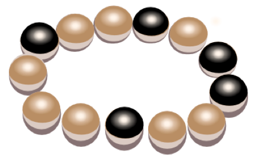
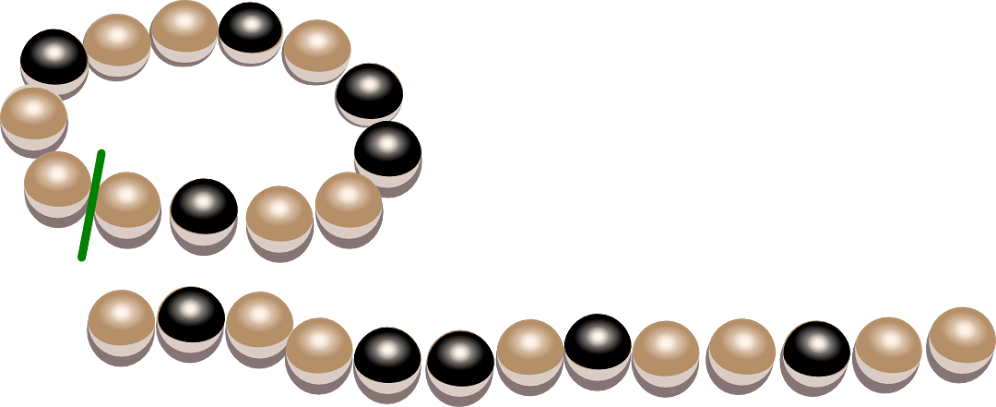

プリンセスはパーティーで，濃（こ）い色と薄（うす）い色の真珠（しんじゅ）がまざったブレスレットを身につけていました。 ブレスレットは，真珠（しんじゅ）の間のどこか１箇所ではずせるようになっています。

プリンセスは寝る前にブレスレットをはずして引き出しにしまいました。 プリンセスは，次の夜，同じブレスレットを身につけようと引き出しをあけたら，似たようなブレスレットもいくつか入っていました。
どれがパーティーで身につけていたブレスレットでしょうか？
